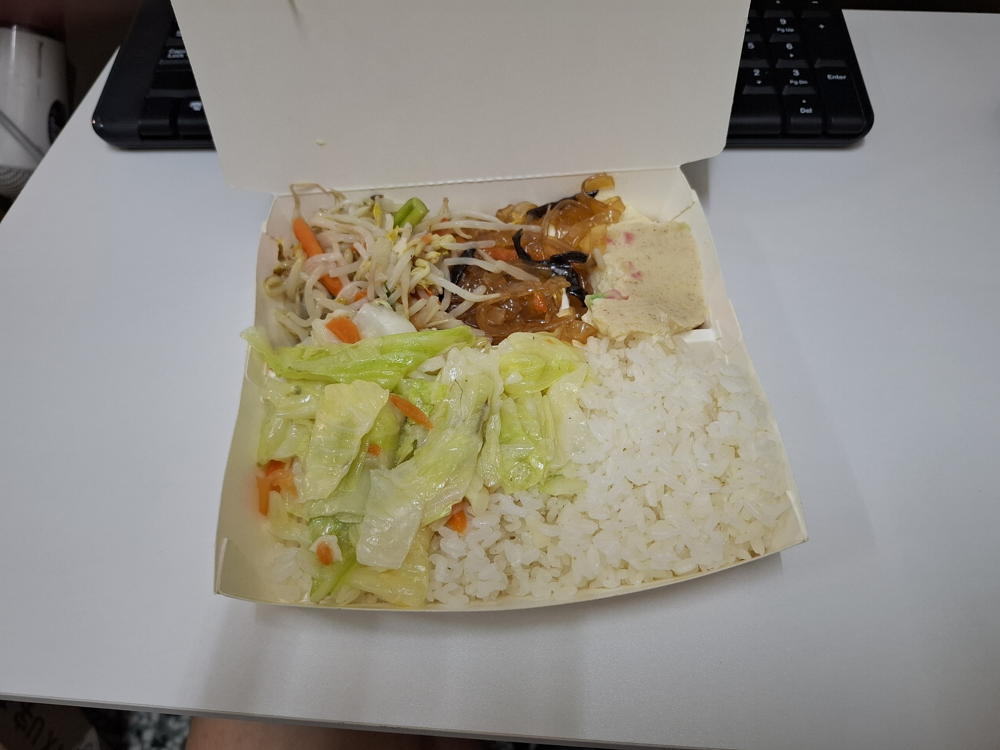
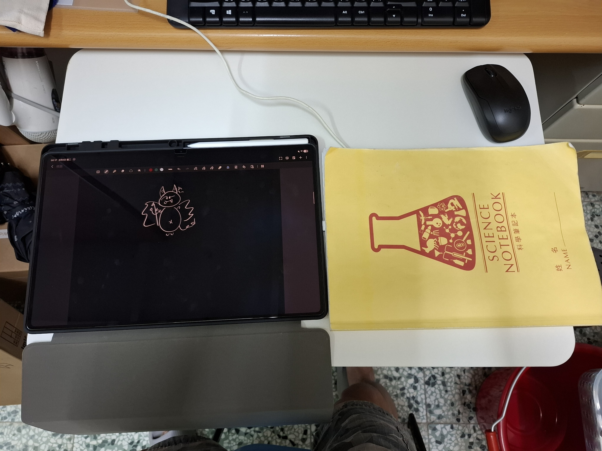
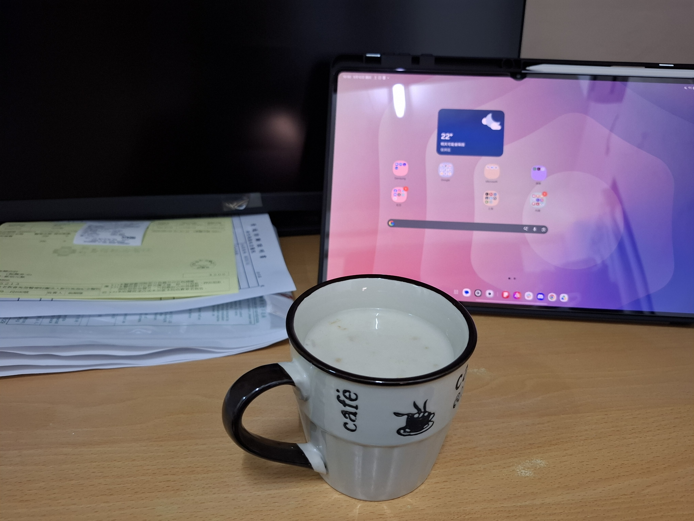

WIP
先挖坑，之前的再慢慢補
2026/8/11 - The 2025 ICPC Southwestern Europe Regional Contest (SWERC 2025)
mocha 打完 IOAI 回歸後的第一場。
因為房間冷氣壞掉，我在家附近的咖啡廳打。
- A：最後 max 自己做掉了，但聽他說寫得很噁心，感覺可以研究一下官解。後來 max 申請協助對拍，有成功對拍出來，因此只吃了一筆罰時，這部分的配合有打出來，然而這題還是花了太多時間。
- B：檢討自己的實作。一開始 Off By One、又忘記 Python 的
bisect要怎麼好好搜區間、連二分搜條件都列錯…我是沙比。但這題不難對拍，最後也有成功對出來，有成功避免更多罰時，但我仍是沙比。
對答案二分搜 區間：s + bisect(range(s, t), value, key=...)，前面的s +不要忘記。 - C：再次檢討自己的實作。這題我們用 Hash 解，我掏出了 作為多項式 Hash 的 Base，這題 ，值 ，很快寫完，傳上去 WA。
雖然自然溢出，但這麼臭的質數根本沒理由被卡，但我還是換成unordered_map，至少先確保正確性，還是 WA。
終於寫出對拍（因為是輸出任意解法都可，所以花了比預想久的時間），但完全對拍不出來，靈光一現把m調大以後對出 WA 了，但已經用unordered_map了，不可能是 Hash Collision 的問題啊？結果是我ans[]開太小，戳出去了，改好以後送，還是 WA。因為我改unordered_map時，又有一個地方的 index 寫爛，戳出去了，我完全是沙比吧。
這題主要問題還是被 Hash 的非確定性誤導了，往錯的方向 Debug。
相信 Hash 的正確性，不要相信自己開出 C-Style Array 大小的正確性。 - D：水。
- E：水。
- F：水。
- G：快結束的時候做出來，但 mocha 精神的構造是爛的，但感覺小修小補一下有機會過？線段樹結構感覺就超好。可補題。
補：二叉樹不夠好，但換成 叉樹就行。 - H：沒看
- I：沒看
- J：我在 Debug B 的時候 max 負責實作 mocha 寫出來的 DP 轉移，但戳出去了。已有檢討實作別人的 DP 轉移時需要考慮 edge/base case。
- K：沒看
- L：精神掉的純字串科技題，似乎是 SA + RMQ，可補。
2026/8/21 - National Yang Ming Chiao Tung University 2025 Team Selection Programming Contest
因為下禮拜（8/25）要比交大校內賽，所以找考古題出來 vir。
我這場久違地發揮很好，只有 pC 吃了罰時，剩下都沒吃，非常開心。
- A：應該精神掉了：線段樹套凸包，查詢時在凸包上二分搜，但看知道這超難寫，寫一半後面沒空閒就丟了。
- B：不會 :D
- C：我們寫出來的題目裡最難的一題。
我一眼(?)看出跟外接圓有關係，想說應該是判外接圓完全一樣，於是先丟給 max 推公式，先去寫其他題。
推完公式、寫完發現範測不太對，首先有奇怪的 問題，於是將聯立方程式改成克拉瑪，還是怪。
mocha 提出用四點共圓來判，但越講越複雜，棄案。
重新觀察範測，發現有一個理應Yes的被判成No，所以就猜是外接圓半徑一樣，再發現我的求圓心根本寫爛了，於是改成用 來判， 有根號，所以把兩邊平方。
除此之外還有三點共線的情況，總之很噁心，好不容易寫完了。
先是Yes / No寫成YES / NO而吃了一筆 WA（之前有檢討過了，還犯，我是沙比，嚴厲檢討）。
改完，WA。發現共線的判斷少判了一個條件，改完，WA。
此時剩 40 分鐘左右，mocha 叫我先去把精神掉的 pG 寫掉，因為他是 Dinic，寫起來可能比較費時間。
AC pG，大家一起回來 debug pC，最後 max 發現我邏輯寫爛，因此兩個三角形只有同時共線、同時不共線的時候會對，只有一個則會爛，當時還剩 2 分鐘左右，腦內風暴了一陣怎樣改最快，最終成功改好，在 CF 不負眾望地 lag 了 10 幾秒後成功 AC :DDDD。
YES / NO 輸出注意格式。 - D：可以歸約為樹上求 LCA，還好我有研究範例測資解釋，因為範測故意少給一個 case，mocha 也沒注意到，總之最後一發 AC，團隊合作讚。
- E：簽到，自己做掉，
想要在靜態區間和亂砸 zkw 要檢討、不太會二分搜要檢討。 - F：矩陣快速冪，藉由範測發現 mocha 想的某個小細節是錯的，還有自己想到另一個細節，總之一發 AC，團隊合作讚。
感覺可以把矩陣快速冪加入模板，雖然很簡單但能讓 debug 時有個東西可以比對。 - G：mocha 很聰明地一眼看出是二分圖最大權獨立集，我把 Dinic 模板一砸就過了。
感覺需要更新一下 Dinic 模板，現在有點醜。 - H：我看了看想起 的性質，但不知道怎麼用，一講出來 mocha 就把它做掉了，團隊合作讚。
- I：滅台題。不會。
- J：二分圖最大匹配，發現邊是 量級，所以直接 的 Kuhn 模板做掉。
- K：閱讀 + 照做 的簽到。
- L：照做 的簽到。
- M：max 很會數學，然後就做掉了。
補模板：研究 PBDS、支援kth, rk的值域 BIT
2026/9/1 - training
早上交大光復校區體檢，因此改到晚上 18:30 ~ 23:30 團練。
三個人都到宿舍住了，第一次實體團練，max 來我和 mocha 的房間。
- A：mocha 和 max 很快做掉，但我實作小燒雞，因為把陣列的 row - col 搞反了。
輸入二維陣列要確認 row-col 方向。 - B：mocha 想太簡單、假解，我補了 case 變正解，但
WA on test 1，因為我的輸出格式 off by one，但這題是輸出任意解，所以沒注意到範測 WA。
輸出任意解：需要手算範測驗證 - C：排組題，算是三個人一起想出來。
- D：敘述爛到把 mocha 和 max 都搞到了。這題真的太爛了，不太想補。
敘述很爛的題目，三人各看一次題目，確認理解一致後再開始想題。 - E：mocha 一眼做掉，我很快砸掉（LCA + zkw ）。
- F：max 很聰明地想到 flow，mocha 很聰明地想出建模，我砸模板，
然後吃了兩筆 RE。
因為點數開太少，我認為開 就夠（因為那部分的點數至多 mex），但實際上可能有 的值，所以就爛掉。
求 MEX 時，先把 的值特判掉。 - G：數論題，我不會數論，這種可能要 mocha 列出式子甚至具體虛擬碼我再做 qwq。困難地寫出來了但最後 WA 沒 de 出來。
加入extgcd模板，研究更多數論模板。 - H：超好題，推爆。mocha 和 max 精神掉，但寫不完，因為我賽中還沒有很理解他們的做法。但我覺得單純精神掉就很厲害了。這種情況感覺給 max 寫會比較有機會？
這場的團隊合作超讚，感覺是因為實體的關係？
2026/9/7 - training
開學日，但因為 TOPC 只剩兩個禮拜，所以我們要卷。
之後跟 PCCA 都是 virtual 的形式，所以我們這次繼續練題。
體諒 max 明天有一整天的課，因此這次縮減到 4hr，反正自己戳可以少戳幾題。
我下午一下課就搭小紅巴跑去燦坤拿我的 Samsung Tab S11 Ultra 14"，再搭小紅巴回到交大，去女二二樓的便當店買了 65 元加飯多菜的便當，帶回宿舍一邊團練一邊吃。

- A：max 很快看出貪心性質（每個人至多一條出邊），因此建模出水母圖，再判環、鏈即可，但他的圖建起來很繁瑣，我花了比預期多的時間寫。普通好題。
- B：不太簡單的構造，後半場左右 mocha 仔細思考一下，就做掉了，他很聰明。
- C：應該是 mocha，分析一下複雜度發現夠好，所以一眼做掉。有趣好題，推。
然而我搞錯輸入的層數的方向，又沒有仔細對照範測，花了不少時間定位問題，檢討自己。這種 trivial 的輸入格式問題我應該要自己好好看題目。 - D：怪題目，我們開場寫完 A 以後就開始狂送 D，但到最後還是沒做出來，也不知道解假在哪裡，他甚至很難寫，我很不開心 D:。可能得補一下。
- E：還不錯的梗題， 直接特判、反之直接暴力。然而吃了一個 WA，因為我特判 的時候忘記
return，最後多輸出了一個無解，而範測沒有這 case。
範測沒有的特判要驗、特判要記得return。 - F：mocha 很快做掉去想別題，然而 max 跟我溝通的時候出了一點差錯，我以為是要用 log trick，
max 不知道那是甚麼就說對對對，然後我越寫越覺得奇怪，跟 mocha 確認以後才知道離線是為了要掃描線，不是為了 log trick，而且這題也沒有 log 的性質。
之後溝通時謹慎使用「log trick」這個詞，可以用三人都知道的類似題型，像是「CSES. Distinct Values Queries」來溝通。
新平板有夠大的ww

2026/9/10 - The 2026 ICPC Asia Japan Online First-Round Contest
PCCA 團練。卡車先講了一些比賽報名相關的事情，因此剩下的時間打三小時的場。
還沒從星期三的急性腸胃炎恢復，請了一整天的假。傍晚覺得比較好了，所以去 PCCA，但整天根本只有喝水和顆粒燕麥飲，超級低血糖，狀態極差，只有大概前半小時活著；而 max 有事情，所以只打半場。總之這場我們大概是 個人在打。
- pA：水。
- pB：水。
- pC：水。但我的思緒已經有點跟不上了。
- pD：給數列 ，求第 項，我打表完丟給他們兩個觀察，但他們在同時想，這有點沒效率，這題應該一個人想就好。後來 max 走了以後 mocha 做掉，然後丟給我寫，但那時我已經沒電了，寫超慢，最後是有做掉啦。
- pE：以為是貪心模擬，但三人接連想出反例，最後 mocha 開始判 case 然後做掉，但我可能已經省電模式了，有一個 case 記錯，吃了一筆 WA。
- pF：大實作，我跟 max 原本想出了一個夠好的解，在 max 走了以後 mocha 想到了一個感覺更好寫的解（實際上原本的比較好）我就開始寫，但我已經關機了，每寫幾行就會頭暈眼前一黑，完全不知道在幹嘛，最後沒寫出來。回去以後用原本的解法補掉了。
若要戳沒被離散化到的點，需要考慮戳進單位格子的情況，此時就不用再枚舉前一點。 - pG：比較偏數學的一題，總之 mocha 把他做掉了，他很厲害。那時我已經化為無情的實作機器，沒有電力動腦。
- pH~J：我沒看。mocha 好像有精神掉其中一題。
打完比賽回宿舍充電
